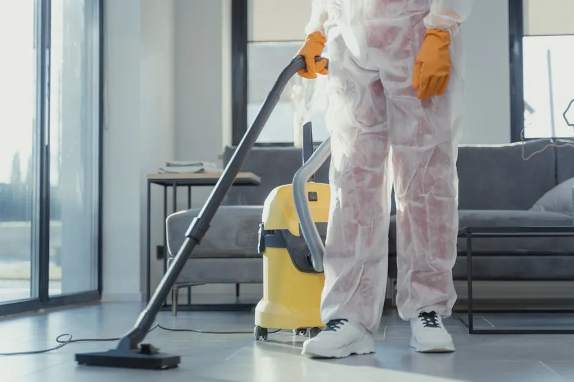
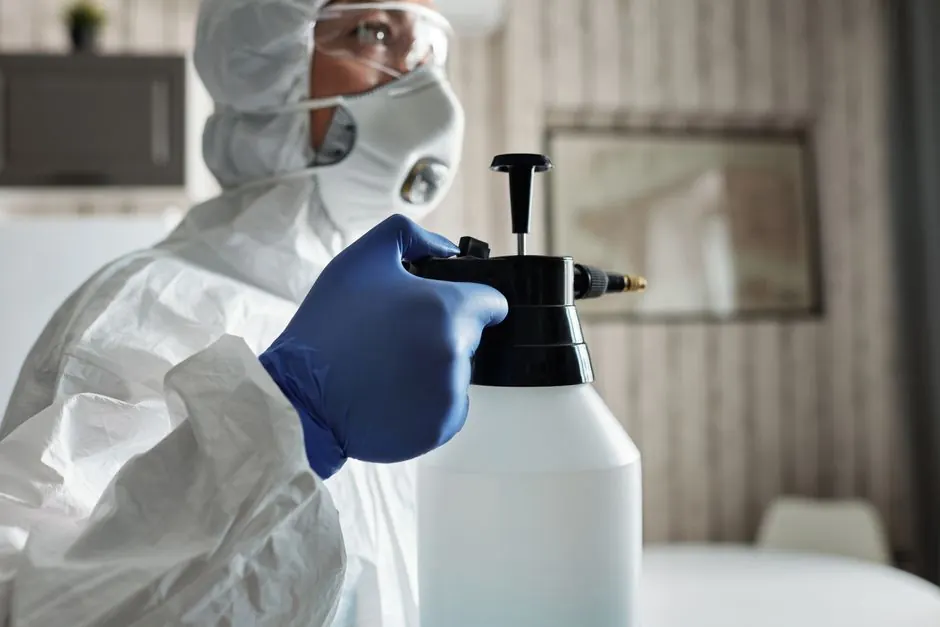

Showers, tile surrounds, subfloors & vanities
Bathroom Mold Removal Spokane WA
Eradicate persistent bathroom mold behind shower tiles, around vanities, and beneath subflooring. We isolate the room under negative pressure, eliminate embedded fungal roots, and stop hidden plumbing leaks permanently.
Shower surround remediationSubfloor restorationNegative air containment
Thorough bathroom care
What Our Bathroom Mold Removal Includes
We look past surface staining to eliminate the moisture sources and colonized framing behind the wall.
Doorway Isolation
We seal the bathroom entrance with 6-mil poly and heavy zipper enclosures to ensure zero spores drift into adjacent bedrooms.
Thermal Tile Inspection
Infrared cameras detect wet insulation and water tracking behind shower pans, tile backer boards, and tub surrounds.
Controlled Material Removal
Contaminated sheetrock, water-soaked vanity kickplates, and rotted subfloor sections are cleanly removed and sealed in heavy bags.
Antimicrobial Encapsulation
Exposed wood studs, subfloor joists, and plumbing penetrations are treated with hospital-grade fungicides and sealed with mold-inhibiting coatings.
Moisture physics
Why Bathroom Mold Is More Than Just Surface Grime
Bathrooms produce high concentrations of daily steam and moisture. During Spokane winters when windows remain tightly shut, high relative humidity condenses against cold drywall, ceiling corners, and caulk seams.
When bathroom mold repeatedly reappears along tile grout or silicone caulk, it almost always signals a deeper problem: water tracking behind the surround from a failed shower valve, leaky drain assembly, or cracked grout. Bleaching the surface only removes the top color while water behind the wall continues rotting structural framing. Our certified technicians trace the moisture to its source and execute clean, permanent remediation.

Bleach is not enoughBleach cannot penetrate porous tile backer board. Professional antimicrobials kill the root.
Surgical protocol
Our 5-Stage Bathroom Remediation Process
Designed for fast turnaround and total containment of airborne contaminants.
Thermal & Moisture Diagnostics
We scan tiled walls and vanity plumbing with infrared cameras to map moisture extent behind finishes.
Negative Air Containment Setup
We seal the doorway and run HEPA air scrubbers venting out a bathroom window to capture all disturbed spores.
Surgical Removal of Rotted Materials
Remove damaged drywall, water-saturated vanity backing, and spongy subfloor surrounding toilet flanges.
HEPA Vacuuming & Antimicrobial Scrub
Exposed wall studs, floor joists, and plumbing penetrations are detailed with HEPA vacuums and broad-spectrum fungicidal wash.
Structural Drying & Moisture Sealant
Commercial dehumidifiers pull moisture below 15% before we apply an EPA-registered mold-resistant encapsulation barrier.
Precision equipment
Specialized Tools for Bathroom Remediation
Engineered for tight residential spaces without damaging clean adjacent rooms.
Compact HEPA Air Scrubbers
High-efficiency scrubbers sized to maintain continuous negative pressure inside tight residential bathrooms.
RF Moisture Scanners
Non-destructive radio frequency meters detect water behind porcelain tile and acrylic tub surrounds without drilling holes.
Oscillating Precision Saws
Clean cutting tools that remove only colonized drywall or subflooring without damaging copper or PEX plumbing lines.
EPA-Registered Fungicides
Hospital-grade, non-bleach antimicrobials that eradicate Aspergillus, Cladosporium, and Stachybotrys down to the root hyphae.
Local case studies
Bathroom Mold Success Stories Across Spokane
Real bathroom restorations completed throughout Spokane neighborhoods.

North Spokane Toilet Wax Ring Failure
A failed wax seal allowed water to seep beneath luxury vinyl tile, rotting subflooring. → Extracted contaminated wood, sanitized subfloor joists, and treated framing in 48 hours.
Spokane Valley Ceiling Condensation
An undersized 50 CFM bath fan allowed winter steam to condense, coating the ceiling in black mold. → Remediated ceiling drywall, treated attic bypasses, and recommended a properly sized 110 CFM exhaust fan.
Bathroom symptoms
Common Problems Solved by Bathroom Mold Removal
Look for these telltale indicators of hidden bathroom mold:
Mold continually returning along caulk lines
Repeated mold emergence along tub caulking proves moisture is trapped behind the surround, feeding fungal roots from inside the wall.
Spongy, squeaky flooring around toilet or tub
Subflooring that flexes underfoot indicates chronic moisture rot and active mold colonization in the structural floor joists.
Dark speckling on painted ceiling & drywall
Inadequate ventilation during winter causes steam condensation, fostering Cladosporium colonies across bathroom drywall.
Upfront costs
Spokane Bathroom Mold Removal Pricing
$750 - $2,800 depending on depth & subfloor
Surface & Ceiling Sanitization ($750 - $1,200)
Containment, HEPA air scrubbers, antimicrobial wash, and fungicidal ceiling/wall encapsulation.
Vanity or Localized Subfloor ($1,200 - $2,200)
Vanity removal, selective drywall cut, subfloor section extraction, and structural joist treatment.
Complete Shower Surround Demolition ($2,200 - $3,500+)
Full tile or surround teardown, extensive subfloor rebuilding, deep stud sanitization, and lab clearance.
Client testimonials
What Spokane Customers Say About Our Bathroom Work
★★★★★
“We noticed black mold returning around our tub caulking no matter how much bleach we scrubbed. Spokane Mold Experts used a thermal camera and revealed a slow drain pan leak soaking the subfloor. They contained the room, removed the mold safely, and treated the framing. So relieved!”
★★★★★
“A failed wax ring under our toilet caused subfloor rot and mold. They set up negative air, replaced the contaminated subfloor sections, and sanitized the joists in two days. Fast and respectful.”
★★★★★
“Excellent communication from dispatch to completion. They diagnosed our ventilation issue and eradicated ceiling mold without making a mess.”

Why does mold keep returning to my Spokane bathroom shower and caulking?
Surface mold that continually returns despite scrubbing indicates that moisture has penetrated behind the tile, grout, or acrylic shower surround. When water seeps into drywall paper or plywood subflooring, mold establishes deep fungal root networks. Household surface cleaners only bleach the top pigmentation; professional remediation removes the contaminated backing and seals the moisture leak.
How much does bathroom mold removal cost in Spokane WA?
Bathroom mold removal typically ranges from $750 to $1,800 for surface, vanity cabinet, and ceiling mold treatments with antimicrobial encapsulation. When tile removal, subfloor structural repair, or shower pan teardown is required, projects generally range from $1,800 to $3,500.
Is bathroom mold always dangerous black mold?
Not always. Bathrooms frequently host a variety of fungal species, including Cladosporium (common black/olive spots on tile grout), Penicillium/Aspergillus (green or yellowish growth on damp drywall), and Aureobasidium (pink/brown mold behind caulking). However, if drywall remains wet from chronic leaks, toxic Stachybotrys chartarum can develop behind wall cavities.
How can I prevent bathroom mold after remediation?
Ensure your bathroom exhaust fan is rated for the room's square footage (at least 1 CFM per square foot) and run it for 20 minutes following every shower. Keep relative humidity below 50%, squeegee shower walls after use, fix dripping plumbing fixtures immediately, and reseal tile grout annually.
Related services
Explore Related Services
Attic Mold Removal
Fix improperly routed bathroom exhaust fans venting humid steam into cold attic insulation.Crawl Space Remediation
Sanitize floor joists and subflooring affected by bathroom leaks draining into foundation dirt.Mold Inspection & Testing
Thermal imaging and moisture testing to verify if mold has spread behind bathroom tile surrounds.Clean bathroom guarantee
Eliminate Bathroom Mold for Good
Call Spokane Mold Experts today for a professional bathroom mold evaluation and upfront written quote. Stop bleaching and start living mold-free.

Bathroom mold specialists
Request Bathroom Mold Removal
Contact our local Spokane office today. Fast scheduling, transparent pricing, and certified remediation technicians.